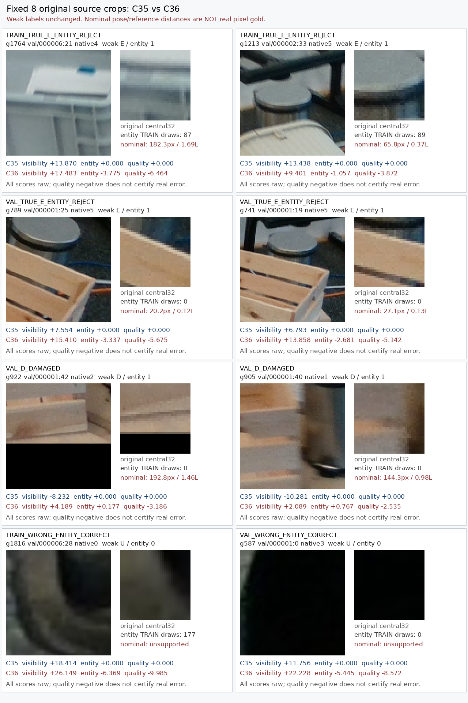

C36의 세 출력은 분리돼 있지만64차원 hidden은 공유한다. 보조 두 손실을 함께 넣은 처치로 MR VAL E13→31/52가 늘고 D89→64/93이 줄었다. source35도22→17개로 감소하여 공동 목표 개선은 아니다.
C36 entity gate는 TRAIN에서 맞게E인49개 중14개, VAL에서31개 중16개를U로 바꾼다. TRAIN D341개 entity거절0과 비교해 가림E에 편향된 거절이 학습자료에서도 남는다.
모든2000 draw를 재생했다. entity양성 E49개는 총4865회, 각80–117회 노출되었고 거절14개도81–117회였다. 누락이나미추출은 아니지만 E는 entity양성638개 중49개로 작은하위집단이며 class내 의미적 균형은 보장되지 않는다.
teacher D/E 각각에서도 visibility와entity logit은 거의 반대축(Pearson 약−.993~−.999), entity와quality는 같은축(약+.934~+.980)을 따른다. 출력의 강한 결합은 관측되지만 어느aux의gradient가 원인인지 또는 sharedhidden만이 원인인지는 이번 두aux동시처치로 식별되지 않는다.
MR quality음수를 전부 visibility shortcut으로 단정하면 안 된다. 명목 같은역할 거리 중앙값은 TRAIN D19.1px/E68.8px, VAL D21.2px/E44.5px이며 E의 더 큰 query편차가 가능하다. 실제 real pointquality gold는 전혀 없다.
VAL entity거절 E16개의 명목거리는 전부20–100px, 중앙39.8px/.202L이고 >100px는0개다. TRAIN거절E14중4개는>100px, 고정사례하나는182.3px/1.69L다. cm오차의providedpose라20px근처를 실측정답/오답으로 판정하거나 학습필터로 쓰지 않는다.
독립 auxiliary hiddenbranch를 같은고정feature에서 학습하는 다음 source-only control은 근거가 있다. visibility hidden에 auxgradient가 들어가지 않게 하고 원C35visibility학습/primary결과를 그대로 유지하는 진단으로, entity가 trueE 양성을 구별할수있는지 먼저 확인한다. 현재 결과로 새설계의 성공이나 채택을 주장하지 않는다.
| 분할 | 역할 | 원input유효N | entity음수 | quality음수 | vis/entity Pearson | entity/quality Pearson |
|---|---|---|---|---|---|---|
| SOURCE_DEVELOPMENT | D | 341 | 0 | 51 | -0.99721 | 0.95227 |
| SOURCE_DEVELOPMENT | E | 49 | 14 | 49 | -0.99300 | 0.93424 |
| SOURCE_DEVELOPMENT | ROLE_UNKNOWN_COMBINED | 896 | 429 | 605 | -0.99892 | 0.99357 |
| SOURCE_VALIDATION | D | 93 | 11 | 59 | -0.99895 | 0.98000 |
| SOURCE_VALIDATION | E | 52 | 16 | 45 | -0.99821 | 0.97259 |
| SOURCE_VALIDATION | ROLE_UNKNOWN_COMBINED | 107 | 38 | 96 | -0.99803 | 0.97722 |
원본라벨·query·L·원96은 변경하지 않았다. 아래8개는 저장점수로 고정한 사후 진단 사례이며 전체평가분모의 대체가 아니다.

전체 조건표 · 선정manifest · 실제view기록